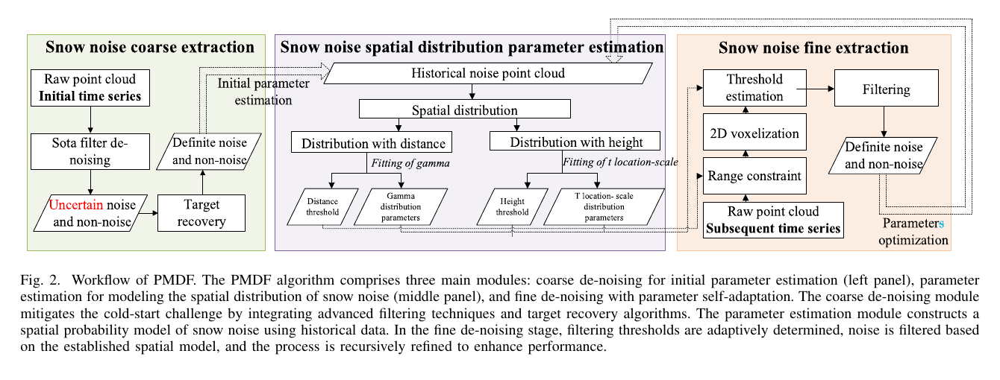
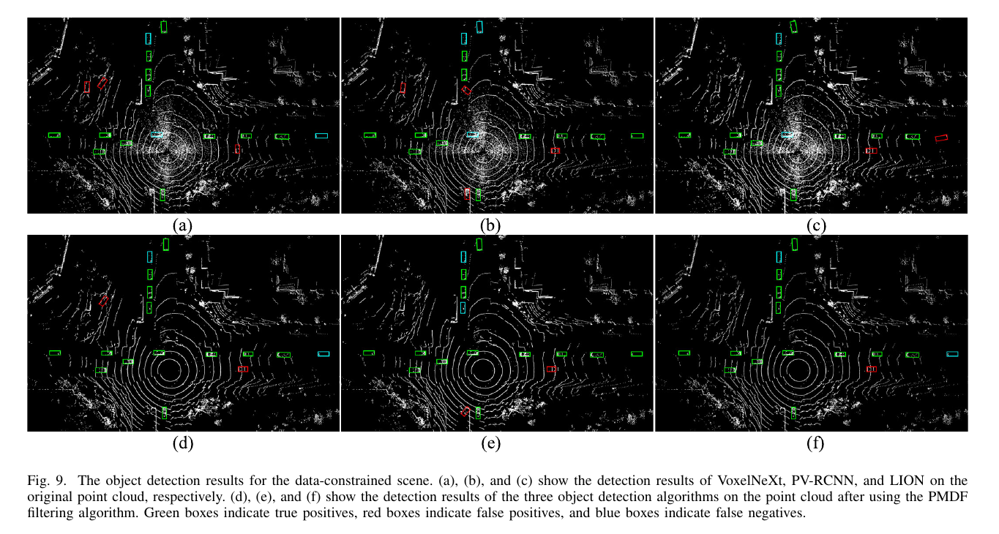

Robotics Research Reader · Stage 1
A Parametric-Adaptive Filter for Improving LiDAR Performance Under Snowfall Conditions
材料覆盖范围：完整阅读当前 PDF 的摘要、正文、图表、实验、限制与结论，并视觉核对本页嵌入的关键原图与表格裁剪。原文件为
离线交付说明：本报告采用 HTML + 同目录
A Parametric-Adaptive Filter for Improving LiDAR Performance Under Snowfall Conditions.pdf。本页严格限于 Stage 1：只还原论文故事线，不读取代码，不用第三方解读补写。离线交付说明：本报告采用 HTML + 同目录
images/ 的相对路径打包；移动或保存时需保留两者的相对目录结构。页面不依赖外部脚本、CDN 或远程字体。一、论文一句话在做什么
概括PMDF 先粗滤得到雪噪声样本并拟合其空间概率分布，再用该模型生成密度过滤参数并迭代自优化，使不同 LiDAR 与雪强条件下的阈值由当前场景数据驱动。 （Abstract；Sec. I；Sec. III；Fig. 2；PDF pp. 1–4）
二、Research Problem
具体问题：在不同 LiDAR、不同降雪强度下自适应删除雪噪声。 （Abstract；Sec. I；PDF pp. 1–2）
场景：自动驾驶和路侧感知的雪天点云。 （Abstract；Sec. I；PDF pp. 1–2）
重要性：固定或线性密度阈值难适配真实雪点的复杂分布。 （Abstract；Sec. I；PDF pp. 1–2）
后果：误删目标结构或漏掉雪点，降低 3D 检测准确率。 （Abstract；Sec. I；PDF pp. 1–2）
三、Existing Methods & Gap
| 方法类别 | 原本怎么解决 | 作者指出的不足及影响 |
|---|---|---|
| ROR/SOR/DROR/DSOR | 按固定或距离相关密度阈值去离群点 | 参数依赖历史数据和传感器，难跨场景；3D 邻域搜索也昂贵。 （Sec. I；Sec. II；PDF pp. 1–3） |
| 强度辅助滤波 | 以低强度/距离预筛选 | 雪噪声强度与分布变化使固定阈值泛化受限。 （Sec. II；PDF p. 3） |
| 深度学习 | 从标注数据学习分类 | 真实雪天逐点标注不足，跨环境性能受限。 （Sec. I；Sec. II；PDF pp. 1–3） |
概括作者把统一缺口概括为：现有启发式和学习方法都过度依赖特定历史/标注数据，过滤参数难随 LiDAR 类型、雪强和场景变化自适应。 （Sec. I，段首 ‘Therefore, over-reliance on prior data…’；PDF p. 1）
四、Core Observation / Insight
- 原始观察
雪噪声并非简单均匀分布，其距离和高度分布可由概率模型描述。原文依据
Sec. III-B–C 用数据分析拟合 gamma distance distribution 与 location-scale height distribution。如何引出算法
概括以概率分布而非固定线性规则生成每点密度阈值。 （Sec. III-B–C；Figs. 3–4；PDF pp. 5–8） - 原始观察
当前场景的粗滤雪点可用于估计分布参数。原文依据
Fig. 2 将 coarse extraction 输出送入 spatial distribution parameter estimation。如何引出算法
概括形成 coarse denoising → parameter estimation → fine denoising 的闭环。 （Sec. III-A–D；Fig. 2；PDF pp. 4–10） - 原始观察
历史窗口可持续更新分布参数。原文依据
Algorithm 1 和 fine extraction 使用历史噪声点云与 self-iteration。如何引出算法
概括让过滤器随 LiDAR 类型和雪强动态调整。 （Sec. III-D；Algorithm 1；PDF pp. 8–10）
五、Method：只看宏观逻辑
做了什么：输入雪天 LiDAR 点云，并用物理先验做 coarse denoising。
为什么：初始阶段需要从当前数据取得候选雪点，以缓解 cold start。 （Sec. III-A；Fig. 2；PDF pp. 4–5）
为什么：初始阶段需要从当前数据取得候选雪点，以缓解 cold start。 （Sec. III-A；Fig. 2；PDF pp. 4–5）
做了什么：恢复被粗滤误删的目标点，形成用于建模的雪噪声样本。
为什么：粗滤结果同时包含不确定噪声和非噪声，需要 target recovery 提高参数样本可靠性。 （Sec. III-A；Fig. 2；PDF pp. 4–5）
为什么：粗滤结果同时包含不确定噪声和非噪声，需要 target recovery 提高参数样本可靠性。 （Sec. III-A；Fig. 2；PDF pp. 4–5）
做了什么：拟合距离 gamma 分布及高度 location-scale 分布。
为什么：作者认为雪噪声空间分布是非线性的，固定阈值不能跨场景。 （Sec. III-B–C；Figs. 3–4；PDF pp. 5–8）
为什么：作者认为雪噪声空间分布是非线性的，固定阈值不能跨场景。 （Sec. III-B–C；Figs. 3–4；PDF pp. 5–8）
做了什么：体素化点云，以概率模型生成 search radius/密度阈值并过滤。
为什么：体素化降低 3D 邻域搜索成本，模型阈值替代数据集特定参数。 （Sec. III-D；Eqs. (7)–(9)；Algorithm 1；PDF pp. 8–10）
为什么：体素化降低 3D 邻域搜索成本，模型阈值替代数据集特定参数。 （Sec. III-D；Eqs. (7)–(9)；Algorithm 1；PDF pp. 8–10）
做了什么：用历史窗口迭代更新参数，输出去雪点云。
为什么：self-optimization 用于随当前雪强和传感器条件重新校准。 （Sec. III-D；Algorithm 1；PDF pp. 8–10）
为什么：self-optimization 用于随当前雪强和传感器条件重新校准。 （Sec. III-D；Algorithm 1；PDF pp. 8–10）

概括核心变化是先从当前/历史粗滤雪点拟合空间概率分布，再由该模型生成细滤参数并自迭代更新，而不是依赖离线固定阈值。 （Sec. I；Sec. III；Fig. 2；Algorithm 1；PDF pp. 1–10）
六、Contributions
- 提出概率模型驱动的 PMDF，包含粗滤、空间分布估计与自优化细滤。 （Sec. I，贡献列表；PDF p. 2） 类别：Method
- 过滤参数随 LiDAR 类型和雪强自适应，不依赖固定先验数据集。 （Sec. I，贡献列表；PDF p. 2） 类别：Modeling / Insight
- 在 CADC、BOREAS、WADS 上跨数据集验证，并评估两种训练数据约束下的检测收益。 （Sec. I，贡献列表；PDF p. 2） 类别：Experiment
七、Experiments
| Dataset | CADC、BOREAS、WADS；雪点标注来自 MSP dataset。 （Sec. IV；PDF p. 8） |
|---|---|
| 与哪些方法比较 | ROR、SOR、DROR、DSOR、DDIOR。 （Sec. IV；PDF p. 8） |
| 评价指标 | Precision、Recall、F1、runtime；下游检测使用 AP/accuracy。 （Sec. IV-B–D；Tables I–V；PDF pp. 11–15） |
| 硬件/实验环境 | Intel i7-12700 desktop；32 GB RAM。 （Sec. IV；PDF p. 8） |
| 是否有消融实验 | 论文未明确说明论文未报告独立模块消融；区分 cold-start 与 steady-state，并比较有/无训练数据约束。 （Sec. IV-B–D；PDF pp. 11–15） |
| 是否有参数实验 | 论文未明确说明论文未报告系统性的参数敏感性曲线。 （Sec. IV；PDF pp. 8–15） |
| 是否有定性实验 | 有；三数据集过滤、错误案例和三检测器案例。 （Figs. 7–10；PDF pp. 9–14） |
| 是否有定量实验 | 有；三数据集过滤指标和两种训练约束下的检测结果。 （Tables I–V；PDF pp. 11–15） |

实验
三数据集过滤
结果PMDF 在 CADC、BOREAS、WADS 的 F1 均超过 90%。
作者据此得出的结论作者称 PMDF 在 precision、recall、效率和稳健性上总体优于五个基线。
来源Sec. IV-B；Table I；PDF p. 11
实验
数据受限检测
结果只用正常天气训练时，经 PMDF 处理后三个检测器准确率分别提高 5.9、9.7、6.4 个百分点。
作者据此得出的结论作者认为 PMDF 在无法重训的场景中改善了雪天检测。
来源Sec. IV-C；Table II；Fig. 9；PDF pp. 12–13
实验
数据不受限检测
结果在 PMDF 过滤数据上训练和测试时，三检测器分别提高 4.8、4.5、4.2 个百分点。
作者据此得出的结论作者认为即使有雪天训练数据，过滤仍带来一致收益。
来源Sec. IV-D；Table IV；PDF pp. 14–15
实验
过滤错误案例
结果Fig. 8 的错误集中在雪点与目标/树木空间重叠区域。
作者据此得出的结论作者把这一现象与体素化造成的局部精度损失联系起来。
来源Sec. IV-B；Fig. 8；PDF p. 12
八、Limitations
作者明确承认的 limitation
作者明确指出：体素化提高效率，但会降低传感器近处、尤其树木等低密度目标的过滤精度；真实雪天数据收集和标注也很困难。 （Sec. IV-B、IV-D；Fig. 8；PDF pp. 12, 15）
从实验结果中直接可见，但作者没有明确称为 limitation 的现象
直接观察主过滤对比排除了 cold-start 结果，报告的是 steady-state performance。 （Sec. IV-B；Table I 前后正文；PDF p. 11）
九、Future Work / Research Implications
作者提出优化 voxelization，例如按目标密度和特征动态调整网格；同时建议更真实的模拟雪数据或无监督检测以降低标注依赖。 （Sec. IV-D；PDF p. 15）
十、论文逻辑链
概括现实问题：雪噪声分布随场景、传感器和雪强变化。 （Sec. I；PDF pp. 1–2）
概括现有方法：固定/距离相关密度阈值、强度先验或学习模型。 （Sec. II；PDF pp. 2–3）
概括不足：参数依赖历史或标注数据，跨场景泛化差。 （Sec. I–II；PDF pp. 1–3）
概括观察：当前雪点样本可拟合非线性空间概率分布。 （Sec. III-B–C；Figs. 3–4；PDF pp. 5–8）
概括思想：让过滤参数由当前场景的概率模型驱动。 （Sec. I；Sec. III；PDF pp. 1–10）
概括方法：粗滤、目标恢复、分布估计、体素细滤和自迭代。 （Sec. III-A–D；Fig. 2；Algorithm 1；PDF pp. 4–10）
概括验证：三数据集过滤与三检测器、两种训练约束。 （Sec. IV；Tables I–V；Figs. 7–10；PDF pp. 8–15）
概括结论：作者报告跨数据集 F1>90%，并观察到 4.2–9.7 个百分点的检测提升。 （Sec. IV-B–D；Sec. V；PDF pp. 11–16）
十一、第一遍阅读结束后，我应该记住的东西
- 概括解决雪天 LiDAR 过滤参数跨传感器/雪强适应问题。 （Sec. I；PDF pp. 1–2）
- 概括核心 gap 是固定或线性参数依赖历史数据。 （Sec. I–II；PDF pp. 1–3）
- 概括最关键 insight 是可从当前粗滤雪点估计空间概率分布。 （Sec. III-B–C；Figs. 3–4；PDF pp. 5–8）
- 概括核心变化是概率模型驱动并自迭代优化的密度过滤。 （Sec. III-A–D；Fig. 2；Algorithm 1；PDF pp. 4–10）
- 概括最重要结果是三数据集 F1 均超过 90，检测提升 4.2–9.7 个百分点。 （Sec. IV-B–D；Sec. V；PDF pp. 11–16）
十二、暂时不要深入的内容
- 概括雪噪声分布建模与 gamma 参数估计（Sec. III-B–C）。
- 概括coarse filtering 与 cold-start 收敛流程。
- 概括体素化、概率阈值和 self-iteration（Figs. 5–6）。
- 概括Table I–V 的精确跨数据集/检测数值。